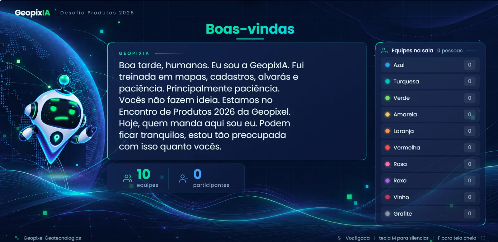
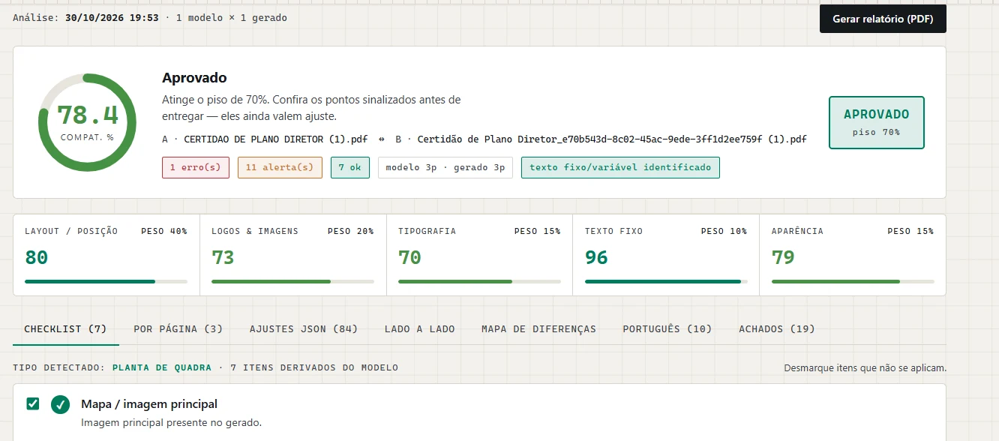
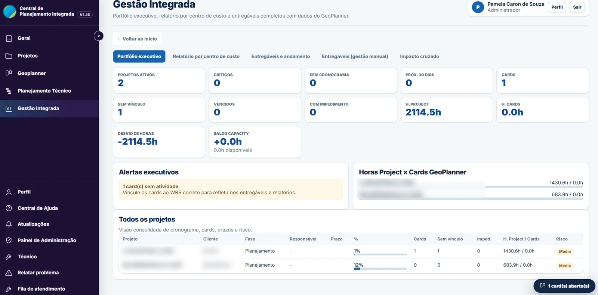

Clientes e dados internos foram omitidos. Demonstrações ao vivo disponíveis em conversa.
01IA na operação
Agentes de IA no helpdesk via MCP
Problema. Indicadores de suporte pouco confiáveis e projetos de implantação sem visão por entregável.
O que fiz. Conectei o Claude ao helpdesk via MCP e levei aos analistas sem precisar instalar Node. O agente apura indicadores e mantém um controle de implantação sincronizado: mostra só o que mudou e aplica após a minha aprovação.
16entregáveis sincronizados, com aprovação humana em cada mudança
Onde a IA entra. Agente com regras escritas: a anotação humana prevalece e nenhum status é inventado.
ClaudeMCPAPI RESTPython

02LLM no produto
GeopixIA: uma mascote de IA para 150 pessoas
Problema. Uma dinâmica sobre IA para o encontro anual da empresa, conduzida por um RH sem perfil técnico e sem mim no dia.
O que fiz. Telão, celular dos participantes, painel do operador e editor de perguntas para cerca de 10 equipes, com ensaio às cegas e roteiro para o RH.
150pessoas, e o formato foi adotado para os treinamentos da empresa
Onde a IA entra. As falas e reações da mascote são geradas por LLM via API, com modo local caso a API caia.
PythonFlaskJavaScriptAPI de LLM
03LLM no produto
Central de Triagem: currículos avaliados com LLM
Problema. Triagem manual, sem critério padrão, e a dúvida se valia a pena pagar por API.
O que fiz. Uma aplicação que cria a vaga a partir do PDF, avalia um lote de currículos e gera ranking, dossiês e exportação, com opção de anonimização.
R$ 0para o RH avaliar a ferramenta antes de pagar por API
Onde a IA entra. O LLM pontua cada critério citando evidências do currículo, alertas e perguntas de entrevista.
PythonFastAPISQLiteAPI de LLM

04Engenharia
Validador de Certidões
Problema. Certidões geradas fugiam do modelo, e ninguém conseguia provar se o erro vinha do modelo ou da equipe.
O que fiz. Uma ferramenta que compara o PDF modelo com o gerado (layout, imagens, tipografia e texto) e classifica cada erro de português pela origem.
0,4 spor página. Antes, só a sugestão do dicionário levava até 57 s por palavra
Onde a IA entra. No desenvolvimento e na otimização. A análise roda 100% local, sem custo por uso.
PythonFastAPIHunspell pt-BRPDF

05Full stack
Central de Planejamento Integrada
Problema. Cronogramas do MS Project e demandas do helpdesk não se cruzavam. Ninguém via a sobrecarga nem quem atrasou quem.
O que fiz. Importação de MS Project, Gantt, heatmap de sobrecarga, desvio de baseline e cadeia de atrasos entre equipes, com login LDAP e deploy por GitLab CI/CD.
20usuários ativos e em expansão, depois de mais de 30 versões
Onde a IA entra. No desenvolvimento, iteração a iteração, e na especificação de produto.
FastAPIPostgreSQLLDAPGitLab CI/CD
06GIS e dados
Dados cadastrais em PostGIS
Problema. Bancos de prefeituras com modelo diferente do exigido em contrato e integrações de dados com falhas.
O que fiz. Mapeei um modelo LADM de 133 páginas contra o produto e entreguei views SQL somente leitura. Também achei a causa-raiz de 8 falhas em cerca de 4.800 linhas de ETL.
543atributos mapeados, sem alterar o instalador do produto
Onde a IA entra. Leitura de documentos longos, cruzamento de atributos e geração e teste de SQL.
PostgreSQL 16PostGISSQLpandas